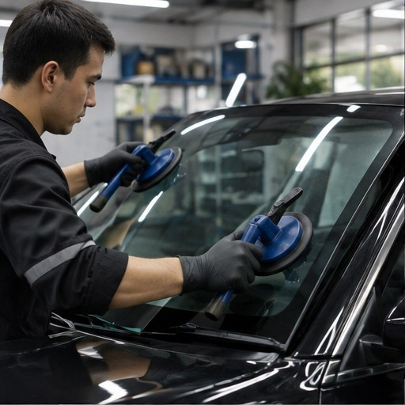
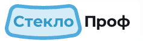
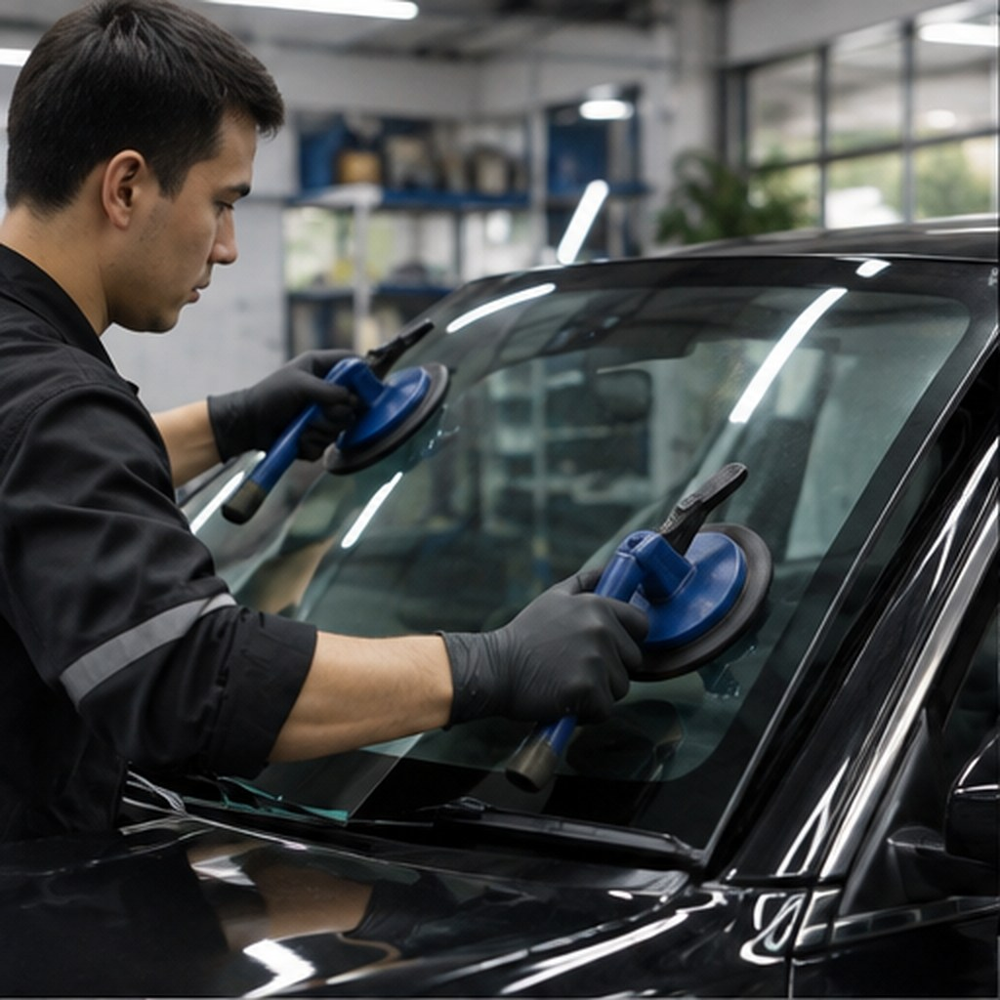
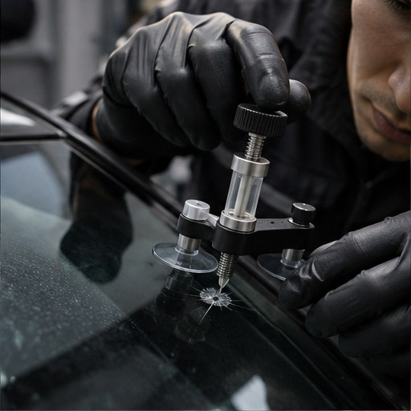
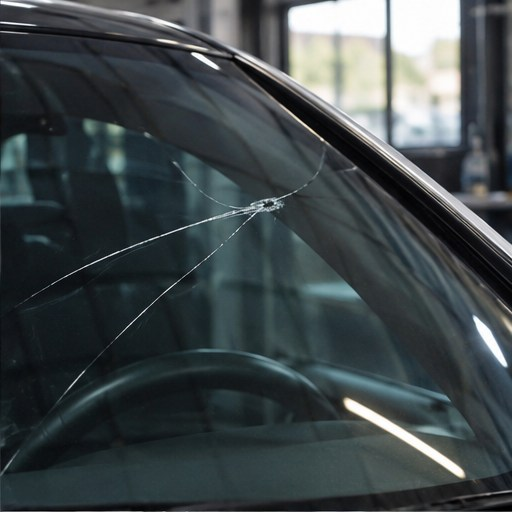
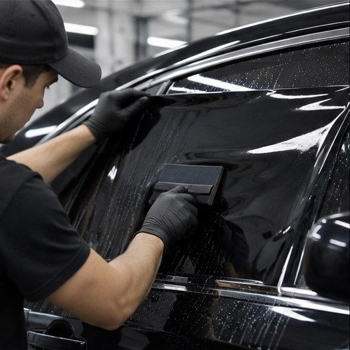
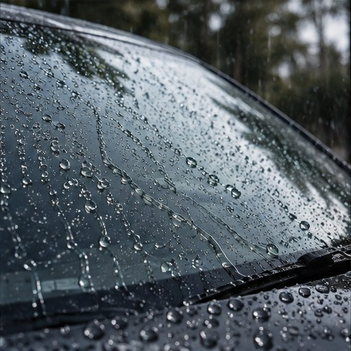
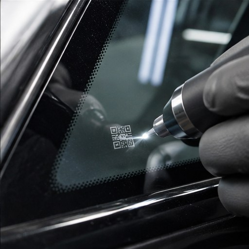

01↗ЗАМЕНАПО ЗАПРОСУ
Замена автостекла
Лобовые, боковые и задние стёкла. Подбор с учётом датчиков, камер и подогрева.
СтоимостьПо расчёту

Подберём, отремонтируем или заменим автостекло под вашу марку и комплектацию. Согласуем стоимость до начала работ.

Выберите марку и модель — поможем подобрать подходящее стекло с учётом года выпуска, датчиков и комплектации.
Начните с марки автомобиля
Никаких непонятных списков: фотографии, краткое описание и ориентировочная стоимость каждой услуги.

01↗Лобовые, боковые и задние стёкла. Подбор с учётом датчиков, камер и подогрева.

02↗Локальная обработка повреждения специальным составом. Возможность ремонта уточним после осмотра.

03↗Оценим длину и расположение трещины, объясним, возможен ли ремонт без замены.

04↗Аккуратная оклейка с подбором плёнки. Стоимость зависит от количества стёкол.

05↗Водоотталкивающая обработка стекла для лучшего обзора во время осадков.

06↗Маркировка автостёкол. Возможность нанесения и точную цену согласуем отдельно.
Цены ориентировочные. Итоговая стоимость зависит от автомобиля и состояния стекла — её подтвердит менеджер до начала работ. Фотографии иллюстративные.
Стёкла различаются по комплектации. Мы уточняем параметры автомобиля перед заказом, чтобы подобрать подходящий вариант.
Датчик дождя, подогрев, камеры ассистентов и проекция HUD.
Оригинальное стекло или совместимый сертифицированный аналог.
Стоимость, наличие, сроки и гарантию уточняем до начала работ.
Подбираем стекло с учётом камер, датчиков, подогрева и других опций. Наличие уточним перед записью.
Подогрев, датчик дождя, комплектации с ADAS.
Вариант стекла и комплектацию уточняем по автомобилю.
Лобовые, боковые и задние стёкла — наличие уточняем.
Подбор акустических стёкол и вариантов с дополнительными опциями.
Стёкла с HUD и камерами ассистентов — уточняем по VIN.
Проверяем совместимость датчиков и необходимость калибровки.
Короткий путь от заявки до решения, без лишних действий.
Отправьте марку, модель и нужную услугу через форму или WhatsApp.
Уточним комплектацию, наличие, цену и доступное время.
Проведём согласованные работы и оформим условия гарантии.
Не нашли ответ? Напишите нам — поможем разобраться с вашим автостеклом.
Задать вопрос в WhatsApp ↗Да, если подходящее стекло есть в наличии и есть свободное время для записи. Срок подтвердит менеджер.
Ориентировочная стоимость — от 5 000 ₸. Возможность ремонта и точную цену мастер подтвердит после оценки повреждения.
Нет. Возможность ремонта зависит от размера, местоположения и типа повреждения. Иногда безопаснее заменить стекло.
Да, при подборе учитываем комплектацию автомобиля, включая камеры, датчики и подогрев. Необходимость калибровки уточняем отдельно.
Отправьте марку, модель, год и нужную услугу. Менеджер уточнит детали и назовёт цену до начала работ.
Подберём стекло или уточним стоимость ремонта — напишите или позвоните.